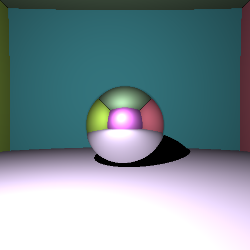
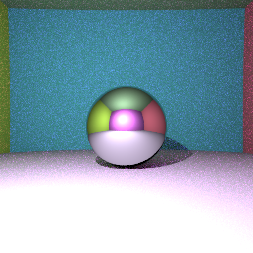
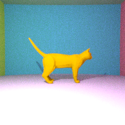
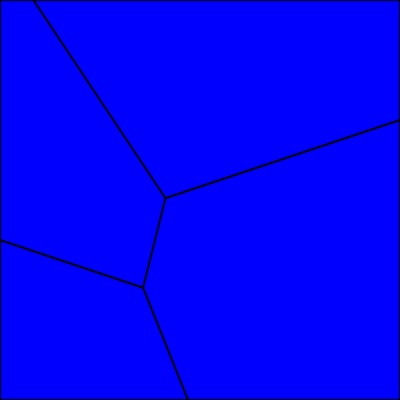
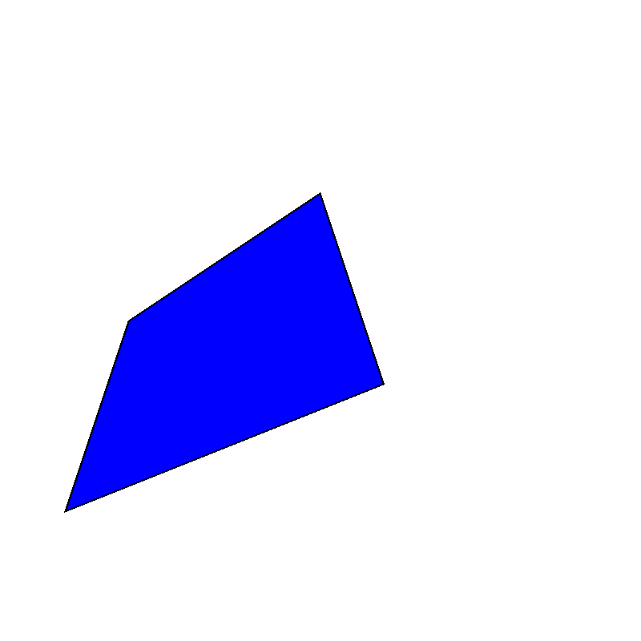

A ray tracer from scratch, then a fluid simulator
Two standalone C++ assignments across the semester: first, a full ray tracer built from the ground up; then a 2D free-surface fluid solver based on semi-discrete optimal transport, a very different, more mathematical corner of graphics.
Project 1 · A ray tracer from scratch
Built lab by lab: ray-sphere intersection and Lambertian shadows, then recursive path tracing with mirror reflections and indirect lighting, Monte Carlo antialiasing and depth of field, triangle meshes loaded from .obj files, and finally a Bounding Volume Hierarchy to make it all fast.



Same 512×512 final render (32 paths/pixel, max depth 5), three acceleration strategies:

Going from a naive per-triangle check to a Bounding Volume Hierarchy, triangles recursively split along the longest axis of their bounding box, cut the final render from nearly 13 minutes to under 6 seconds, without changing a single pixel of the output.
Project 2 · Fluid simulation via optimal transport
A 2D incompressible free-surface fluid solver: each particle owns a Laguerre cell whose area is tied to a target fluid volume, and semi-discrete optimal transport, solved with L-BFGS, keeps those areas correct as the fluid moves.
Voronoi diagram
Cells built by clipping the unit square against bisectors (Sutherland–Hodgman), parallelized with OpenMP. Verified on 100 random sites: total cell area = 1.
Power diagram + L-BFGS
Weighted sites turn the Voronoi diagram into a power diagram; L-BFGS then adjusts weights so each cell's area matches a target: the discrete side of semi-discrete optimal transport.
Free-surface fluid
An extra "air" weight leaves room for a free surface. Each step recomputes Laguerre cells, pulls particles toward their cell centroid with a spring force, and applies gravity.


The result: fluid mass gradually accumulates at the bottom of the domain under gravity while each particle's cell keeps roughly the same area throughout: exactly the incompressibility the method is designed to enforce.